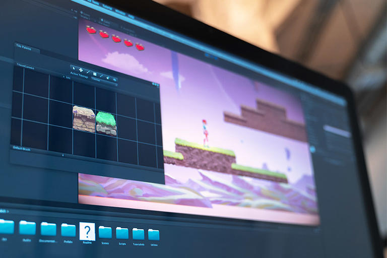

What are the requirements?

Requirements
- All students must undergo a portfolio review and/or an interview with the Creative Technologies Admissions
Committee before being admitted into the program. The Committee will evaluate admission requests from new
beginning freshman, new transfer students, and internal transfers. The Creative Technologies program
reserves the right to maintain a balanced enrollment and the number of students wishing to enter the
Creative Technologies program may be restricted.
- Students will be allowed to continue in the Creative Technologies program who have met and continue to
maintain a cumulative GPA of 2.50 and have demonstrated competency through an intermediate portfolio review.
- 56 minimum credit hours required
Individual Major Requirements
- Sequence in Audio and Music Production and Interdisciplinary Technologies - Students will
be
allowed to
continue in this sequence if they meet and continue to maintain an overall cumulative GPA of
2.00.
- Sequence in Game Design - Students will be allowed to continue in this sequence if they meet
and
continue
to
maintain an overall cumulative GPA of 2.50 and a cumulative GPA of 3.0 within the major.
Additionally,
students in the Game Design Sequence must maintain consecutive Fall–Spring enrollment in their final at
the
University. Any student not enrolled at the university for more than one semester must reapply to the
sequence. Students who leave the Sequence in Game Design may continue as a Creative Technologies major
in
Audio and Music Production or Interdisciplinary Technologies if they have an overall cumulative GPA
of
2.00.
- Sequence in Accelerated Creative Technologies - High achieving students with a cumulative GPA of 3.20
or higher may apply to the accelerated sequence one year before completion of their undergraduate degree.
This sequence allows students to take up to 12 hours of approved graduate courses that will count for both
the undergraduate and graduate program in Creative Technologies. Students can then apply to the Creative
Technologies graduate program in the spring of their senior year. Enrollment in the Accelerated Sequence
does not guarantee final admission into the Creative Technologies graduate program. For additional
information on minimum requirements for admission and the application and selection process, visit
IllinoisState.edu/Majors and the Creative Technologies Program advisor.
- Interdisciplinary Technologies Sequence - The Interdisciplinary Technologies sequence provides
concentrated study in mobile, web and computer programming concepts, UI/UX, motion graphics, and
interactivity along with a host of elective experiences across a range of creative/technical fields
including sound, electronic music, music production, AR/VR/XR, and game design.